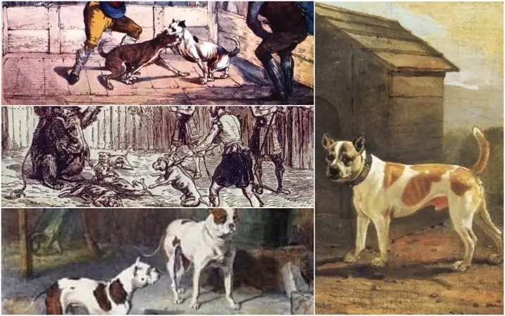

En la antigüedad, los pitbulls eran utilizados en peleas de perros e incluso en enfrentamientos contra otras especies . Aunque actualmente dichos eventos están prohibidos, se sigue vinculando a esta raza con la agresividad. De todas formas, su comportamiento está asociado al modo en que fue criado y a su socialización.
Los expertos indican que todos los perros, entre las tres semanas y los primeros tres meses de vida , deben ser expuestos a diversos estímulos exteriores con la finalidad de que se vuelvan sociables. La idea es que aprendan que otras mascotas y las personas NO son una amenaza y así evitar que, en el futuro, reaccionen negativamente frente a lo desconocido, algo preocupante en el caso de los pitbulls dadas sus características.
Por eso es importante subrayar que un pitbull no es un animal peligroso por genética: solo se volverá peligroso si es criado con agresividad o si se lo aísla . De esta manera, el ser humano resulta clave en la conducta del perro.

Podemos usar la palabra personalidad o forma de ser , ya que los rasgos del carácter de un ser vivo se definen en sus primeros meses o años de vida .
Por esta razón, si adoptamos un perro debemos asumir la responsabilidad de brindarle un entorno sano en todos los aspectos posibles, tanto emocional como social , en especial si se trata de una raza percibida con miedo por parte de la población.
Entre las prácticas horribles a las que se ha sometido a los pitbull se encuentra un mal llamado DEPORTE que consistía en meterlos en un pozo con el objetivo de que cazaran ratas ; el ganador era el que consiguiera la mayor cantidad de víctimas.
Se trata de otro tipo de abuso que en la actualidad está prohibido pero que era relativamente común en Inglaterra hace unas cuantas décadas.
Aunque en muchos países del mundo es considerado potencialmente peligroso, y de que existan registros de mordeduras y asesinatos a cargo de estos perros, todo depende completamente del criador. Es decir, muchas veces son los dueños los que transmiten su comportamiento violento, agresivo e inescrupuloso a estos perros. Si son criados, educados y adiestrados positivamente , los Pitbull son mascotas buenas, afectuosas, fieles y muy leales. Cuando están en presencia de otros perros y animales, es probable que su instinto protector y territorial los haga reaccionar de forma agresiva. Por econsiguiente, el criador debe enseñarles a socializar desde cachorros tanto con otros animales como con personas diferentes a su entorno. Los Pitbull son audaces, fuertes y muy valientes, con un carácter bastante equilibrado.
Al ser el pitbull un perro que necesita con una conformación robusta y un buen desarrollo muscular, necesita unos niveles de proteína más altos que los perros de otras razas . Por otra parte, la alimentación de los pitbull también debería estar formulada para prevenir problemas articulares. Al igual que en otras razas, hasta aproximadamente el mes y medio o dos meses de vida los cachorros se alimentan a base de leche materna , aunque a partir del mes ya pueden empezar a comer parte de alimentos sólidos . El paso de nutrirse exclusivamente a base de leche a comer alimentos sólidos se denomina destete y es a partir de entonces, y no antes, cuando se aconseja acoger al animal. Si, por algún motivo, no has tenido más remedio que adoptar a un pitbull lactante, se recomienda darle leche maternizada específica para perros , que está específicamente formulada para la especie canina y es más aconsejable que la leche de vaca.
A partir del mes de vida , mientras sigue tomando leche, puede empezar a presentarse al animal alimento seco o alimento húmedo, específico para cachorros jóvenes, y ver la reacción del animal, pero sin forzarle a comer. Con dos meses de vida, el cachorro ya debería haber dejado la leche y empezado a comer alimento. Al principio puede ser de ayuda mojar el alimento con agua o caldo (sin cebolla y sin sal) para que lo encuentre más cómodo de ingerir o más apetecible, aunque esto no suele ser necesario. Con respecto a los pitbulls adulto, En cuanto a la frecuencia y la cantidad de la comida, es importante seguir las indicaciones del fabricante. Por lo general, los perros adultos pueden alimentarse una vez al día, no obstante, en los pitbull se aconseja distribuir la cantidad de comida en dos tomas (o incluso tres), para evitar que ingieran gran cantidad de comida de una sola vez . Por otra parte, se debería suministrar un alimento específico para razas medianas o grandes, ya que, en primer lugar, tienen un tamaño de croqueta adecuado al tamaño del animal (evitando así que coman demasiado rápido) y, en segundo, están formulados para prevenir ciertos problemas que pueden aparecer en perros de gran tamaño (como por ejemplo, problemas articulares). También, al ser los pitbull animales muy activos , en algunos casos podría ser beneficioso aportar un alimento específico rico en energía , para perros de gran actividad, pero esto solo debe hacerse si el animal realiza ejercicio regularmente. De lo contrario, podría aparecer sobrepeso , porque los alimentos energéticos aportan muchas calorías. Por otro lado, es importante que el alimento que se aporte al pitbull tenga unos niveles adecuados de proteína (no debería bajar del 25%), y es interesante que ésta proteína sea de alta calidad , fácilmente asimilable para el organismo del animal. Incluso, es más beneficioso que la proteína provenga de carne que de subproductos cárnicos. Es muy importante conocer la composición del alimento para saber si realmente se trata o no de un producto adecuado.